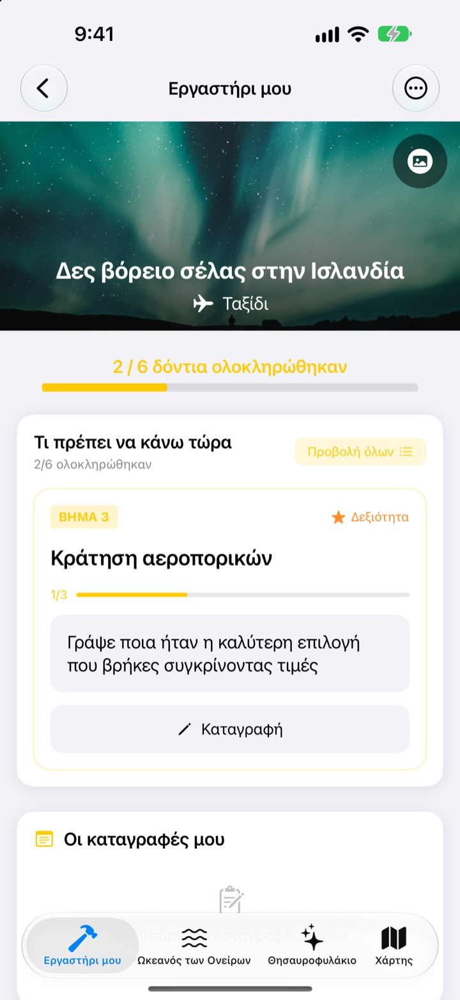
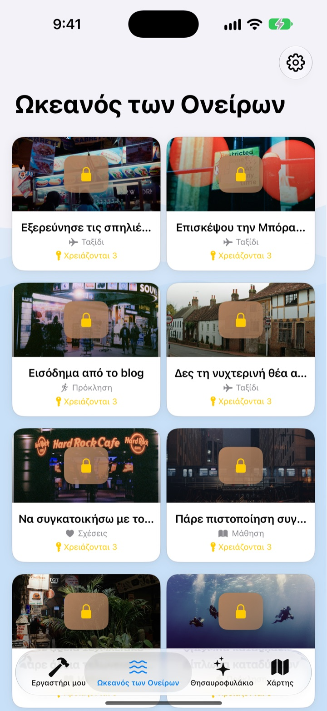
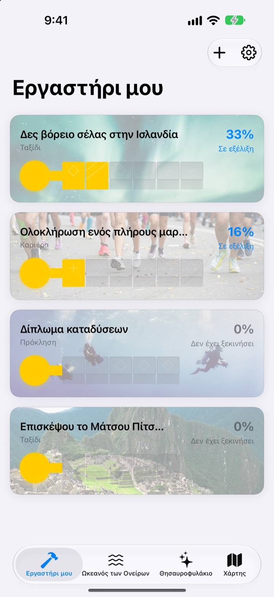
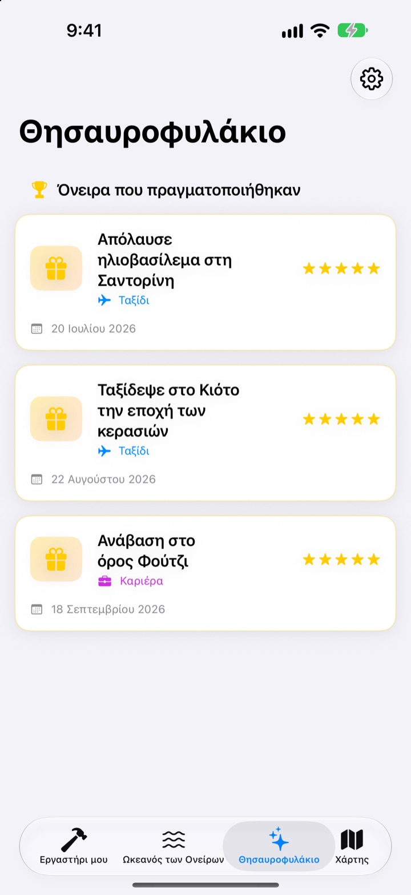

Μην γράφετε απλώς
τα όνειρά σας
Διαλέξτε ένα όνειρο και τα μικρά βήματα που οδηγούν εκεί γίνονται τα δόντια ενός κλειδιού. Απαντήστε στο σημερινό βήμα, μία ερώτηση τη φορά, και πριν το καταλάβετε το κουτί έχει ανοίξει.
Μία αγορά και όλες οι λειτουργίες είναι δικές σας. Χωρίς συνδρομή, χωρίς διαφημίσεις.

Ολοκληρώστε το κλειδί
Στο όνειρο του σέλαος στην Ισλανδία μένουν δύο βήματα. Απαντήστε σε κάθε ερώτηση με μία γραμμή (ή αφήστε την κενή) και πατήστε «Επόμενο». Κάθε ολοκληρωμένο βήμα γεμίζει ένα δόντι, και το γεμάτο κλειδί ανοίγει το κουτί.
Γράψατε ποτέ λίστα ονείρων και την ξεχάσατε;
Το «να δω το βόρειο σέλας» είναι τόσο μεγάλο που δεν ξέρετε από πού να ξεκινήσετε, και μένει στη λίστα για χρόνια. Το Dream Seeker το χωρίζει σε βήματα που γίνονται από σήμερα, όπως να βρείτε την εποχή, να μαζέψετε χρήματα και να κλείσετε εισιτήρια, και σας δείχνει μόνο αυτό που είναι για τώρα.
Πάνω από 590 όνειρα για να διαλέξετε
Ταξίδια, εμπειρίες, επιτεύγματα, υγεία, μάθηση και σχέσεις. Όνειρα από έξι τομείς επιπλέουν σε κουτιά στον Ωκεανό των Ονείρων. Φέρτε όποιο σας αρέσει στο εργαστήρι σας, και τα βήματά του είναι ήδη χωρισμένα.
Δεν βρίσκετε το δικό σας; Φτιάξτε το με τίτλο, τομέα και τα βήματα που χρειάζονται.

Ένα δόντι τη φορά, όσο χρειάζεται για σήμερα
Στο Εργαστήρι μου βλέπετε με μια ματιά πόσο έχει προχωρήσει το κλειδί κάθε ονείρου. Το τρέχον βήμα είναι στην κορυφή, και απαντώντας στις ερωτήσεις του γεμίζει ένα δόντι.
Απαντήσεις και φωτογραφίες μαζεύονται στις Καταγραφές μου, και στο Χρονολόγιο προόδου βλέπετε όλη τη διαδρομή.

Τα όνειρα που έγιναν στο Θησαυροφυλάκιο, τα μέρη στον χάρτη
Γεμίστε όλα τα δόντια και ανοίξτε το κουτί. Τα όνειρα που πραγματοποιήθηκαν μαζεύονται με την ημερομηνία τους στο Θησαυροφυλάκιο, και όσα είναι σε παύση περιμένουν εκεί μέχρι να τα ξαναπιάσετε.
Τα όνειρα με τοποθεσία εμφανίζονται στον χάρτη, για να βλέπετε όλα τα μέρη όπου θέλετε να πάτε.

Ξεκινήστε σε τρία βήματα
- 1
Διαλέξτε όνειρο
Πατήστε ένα κουτί στον Ωκεανό των Ονείρων και επιλέξτε «Μεταφορά στο εργαστήρι μου».
- 2
Απαντήστε στο σημερινό βήμα
Απαντήστε μία μία στις ερωτήσεις του πάνω βήματος για να γεμίσει ένα δόντι.
- 3
Ανοίξτε το κουτί
Όταν γεμίσουν όλα τα δόντια, το κλειδί είναι έτοιμο και το κουτί ανοίγει.
Έξι τομείς στον Ωκεανό των Ονείρων
- Ταξίδι
- Δες βόρειο σέλας στην Ισλανδία · Απόλαυσε ηλιοβασίλεμα στη Σαντορίνη
- Εμπειρία
- Άλμα με αλεξίπτωτο (skydiving) · Παραπέντε
- Επίτευγμα
- Ολοκλήρωση ενός πλήρους μαραθωνίου · Πεζοπορία στο base camp του Έβερεστ
- Υγεία
- Κάνε 20 έλξεις · Φτιάξε κοιλιακούς
- Μάθηση
- Μίλα άπταιστα αγγλικά · Μίλα άπταιστα γαλλικά
- Σχέσεις
- Ταξίδι σε όλο τον κόσμο με τους γονείς · Ένας μήνας στη Τζετζού με φίλους
Κάθε τομέας έχει σχεδόν εκατό όνειρα. Δικά σας φτιάχνετε από το Εργαστήρι μου με «Προσθήκη νέου ονείρου».
Μία αγορά, όλα μέσα
Η εφαρμογή
- Πάνω από 590 όνειρα με ερωτήσεις για κάθε βήμα
- Τα δικά σας όνειρα
- Καταγραφές με φωτογραφίες και Χρονολόγιο προόδου
- Θησαυροφυλάκιο και χάρτης
- Λειτουργία ανάπτυξης ονείρων
- Μελλοντικές ενημερώσεις
Στηρίξτε τον δημιουργό (προαιρετικά)
- Αν η εφαρμογή σάς βοηθά, μπορείτε να αφήσετε ένα μικρό φιλοδώρημα από τις Ρυθμίσεις
- Το φιλοδώρημα δεν ξεκλειδώνει τίποτα. Και χωρίς αυτό, όλες οι λειτουργίες είναι δικές σας
Μεμονωμένα φιλοδωρήματα, όχι συνδρομή.
Μέσα στην εφαρμογή δεν πληρώνετε τίποτα επιπλέον. Χωρίς λογαριασμό, χωρίς διαφημίσεις.
Συχνές ερωτήσεις
Πώς ξεκινάω;
Στην καρτέλα Ωκεανός των Ονείρων πατήστε ένα κουτί που σας αρέσει και επιλέξτε «Μεταφορά στο εργαστήρι μου». Στο Εργαστήρι μου απαντήστε στις ερωτήσεις του τρέχοντος βήματος και τα δόντια γεμίζουν ένα ένα. Όταν γεμίσουν όλα, ανοίγετε το κουτί.
Μπορώ να προσθέσω δικό μου όνειρο;
Ναι. Στο Εργαστήρι μου πατήστε «Προσθήκη νέου ονείρου» και γράψτε τίτλο, τομέα και τα βήματα για να φτάσετε εκεί.
Πώς βάζω ένα όνειρο σε παύση ή το ξαναπιάνω;
Στο μενού ενός ονείρου σε εξέλιξη επιλέξτε «Εγκατάλειψη ονείρου» και θα μεταφερθεί στα «Όνειρα σε παύση» στο Θησαυροφυλάκιο. Εκεί πατήστε «Επανεκκίνηση» για να επιστρέψει στο εργαστήρι ή «Οριστική διαγραφή» για να το σβήσετε.
Τι είναι η λειτουργία ανάπτυξης ονείρων;
Μια οθόνη όπου διαχειρίζεστε τα όνειρα σαν ανάβαση σε βουνό. Την ενεργοποιείτε ή απενεργοποιείτε στις Ρυθμίσεις > Εμφάνιση. Εκεί βάζετε προθεσμίες για κάθε βήμα και παρακολουθείτε εμπόδια όπως κόστος και χρόνο, σαν σε έργο.
Δεν εμφανίζονται φωτογραφίες.
Ορισμένες φωτογραφίες φόντου κατεβαίνουν από το ίντερνετ. Ελέγξτε τη σύνδεσή σας. Χωρίς σύνδεση εμφανίζεται μια προεπιλεγμένη εικόνα.
Μπορώ να μεταφέρω τις καταγραφές σε νέο iPhone;
Οι καταγραφές αποθηκεύονται μόνο σε αυτή τη συσκευή, χωρίς λογαριασμό ή συγχρονισμό. Αν επαναφέρετε νέο iPhone από αντίγραφο iCloud ή υπολογιστή, μεταφέρονται μαζί με τα δεδομένα των άλλων εφαρμογών.
Υπάρχουν αγορές μέσα στην εφαρμογή;
Όχι. Με την εφαρμογή έχετε όλες τις λειτουργίες. Τα φιλοδωρήματα στις Ρυθμίσεις υπάρχουν μόνο αν θέλετε να πείτε ευχαριστώ.
Στέλνονται κάπου τα όνειρα και οι καταγραφές μου;
Όχι. Δεν υπάρχει λογαριασμός, διαφημίσεις ή εργαλεία ανάλυσης. Τα όνειρα, οι καταγραφές και οι φωτογραφίες σας μένουν στη συσκευή.
Πώς επικοινωνώ μαζί σας;
Σφάλματα, ιδέες ή οτιδήποτε άλλο, στείλτε τα από την «Αποστολή σχολίων» στις Ρυθμίσεις της εφαρμογής ή με μήνυμα στο Instagram (@lee25_ios).
Ερωτήσεις ή προβλήματα; Γράψτε στο leeo@kakao.com.